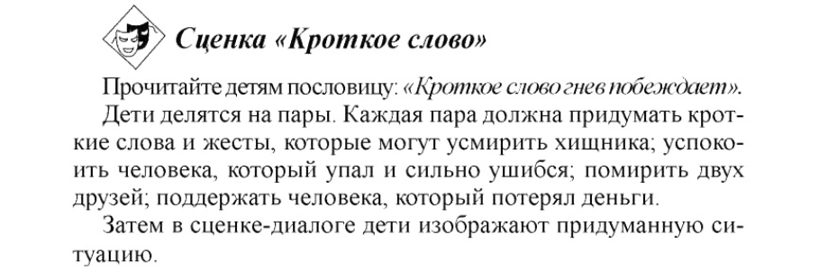
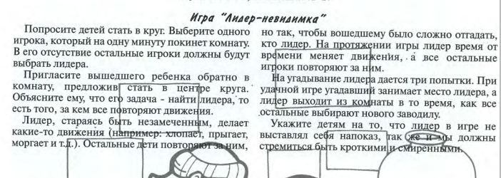

ТЕМА: ЗАПОВЕДИ БЛАЖЕНСТВА. Блаженны кроткие, ибо они наследуют землю»
Кротость- это
великодушие, способность простить обидчика, не отвечать злом на зло, не гневаться и раздражаться, а иметь
внутренний покой в любых ситуациях. Кротость – это состояние сердца, благодарное,
благодушное, мирная простота и доброта, спокойствие.
ЦЕЛЬ: Помочь понять детям, что кротость – характер Иисуса.
«Научитесь от Меня, ибо Я кроток и
смирен сердцем» (Мф. 11:29)
Это не малодушие, страх или
слабость. Кроткий человек, это сильный человек, его ничто не может пробить извне, ему
всегда хорошо, он спокоен.
БИБЛЕЙСКАЯ ИСТОРИЯ: Быт 13:1–7,
(1 Царств 18-31 гл. ;2 Царств 1-5гл. - на выбор)
ЗОЛОТОЙ СТИХ: (на выбор)
«Кроткий ответ отвращает
гнев, а оскорбительное слово возбуждает ярость…» Пр15:1
«Блаженны кроткие, ибо они наследуют землю»
Матфея 5:5
«Кроткий язык
— древо жизни, но необузданный — сокрушение духа…» Пр
15:4
«Возьмите иго Моё на
себя и научитесь от Меня, ибо Я кроток и смирен сердцем, и найдёте покой душам
вашим» Матфея 11:29
ЗАИНТЕРЕСОВАННОСТЬ
Для старших
Проиграть с детьми различные ситуации,
где бы они попробовали себя вести так, как бы по их мнению,
повел бы себя кроткий человек. «Кроткий ответ отвращает гнев».
Ответить на слова/поведение кого-то кротко.

Для младших

Поговорить с детьми, как же проявляется
кротость в жизни:
- радостное,
спокойное, молчаливое послушание (Пр. родители попросили отложить телефон,
помыть посуду и пр.)
- отвечать на грубость, обидные слова без злобы и гнева, кротко, по-доброму,
спокойно (одноклассник специально толкнул и ты упал, незнакомец на улице
накричал на тебя, друг обидно пошутил о твоей внешности и пр.)
- принимать спокойно, с благодарностью, без возмущения различные ситуации (ты
вышел нарядный в гости, а пошел дождь и еще машина окатила тебя водой; тебе на
контрольной попался сложный вариант задачи; ты купил лимонад, но открывая он упал
и пролился и пр.)
Вывод: Кроткими называются те люди,
которые терпеливо, со смирением переносят неприятности, огорчения и страдания,
не обижаясь на своих обидчиков и не ропща на Бога. Кротость – не
малодушие. Это стиль жизни детей Божьих, их подражание Господу. Кротость
обладает силой рассеивать вражду, создавать мир и гармонию. Это лекарство от
эгоизма.
Примеры из Библии:Какие герои Библии были кроткими и
почему?
- можно рассмотреть историю о Давиде и его отношении к царю Саулу
- или рассмотреть историю о жизни Моисея, который был назван самым кротким человеком на земле - -
или историю Авраама
Первая история
«поднялсяАврам из Египта, сам и жена его, и все, что у него
было, и Лот с ним, на юг.И был Аврам
очень богат скотом, и серебром, и золотом.И продолжал он переходы свои от юга
до Вефиля, до места, где прежде был шатер его между Вефилем и между Гаем,до места
жертвенника, который он сделал там вначале; и там призвал Аврам
имя Господа.И у Лота, который ходил с Аврамом, также был мелкий и крупный скот и шатры.И непоместительна была
земля для них, чтобы жить вместе, ибо имущество их было так велико, что они не
могли жить вместе.И был спор между пастухами скота Аврамова и между пастухами
скота Лотова; и Хананеи и Ферезеи жили тогда в той земле.»Быт 13:1–7
Аврам возвращается в Ханаан и останавливается между Вефилем
и Гаем, как и в прошлый раз. Но время мира, покоя, который приносит это хорошее
место, длится недолго. Начинаются споры между пастухами Авраама и Лота. Земля
для них оказывается «непоместительной», — притом, что на этой земле живут хананеи
и ферезеи (любопытно, что для двух народов места
хватает, а члены одной семьи не могут между собой договориться…) Как ни
странно, но не голод, а благословение богатством теперь становится угрозой и испытанием.В каком-то смысле может повториться ситуация
вражды Каина и Авеля (Быт 4). Но Аврам, хоть и
старший, вовсе не Каин.
«И сказал Аврам Лоту: да не будет раздора между мною и тобою, и между
пастухами моими и пастухами твоими, ибо мы родственники; не вся ли земля пред
тобою? отделись же от меня: если ты налево, то я направо; а если ты направо, то
я налево.» Быт 13:8–9
Проявляет кротость, пренебрегая своим правом
старшего Аврам предлагает Лоту самому выбрать, как разделиться.Действительно, иногда жить вместе непросто.
Подчас особенно сложно жить с праведником. Он обличает просто самим фактом
своего существования, ведь он всегда и везде ставит Бога и верность Ему на
первое место. Да и жить «под крылом» у дяди может наскучить…
«Лот возвел очи
свои и увидел всю окрестность Иорданскую, что она, прежде нежели истребил
Господь Содом и Гоморру, вся до Сигора орошалась
водою, как сад Господень, как земля Египетская;и
избрал себе Лот всю окрестность Иорданскую; и двинулся Лот к востоку. И
отделились они друг от друга.Аврам
стал жить на земле Ханаанской; а Лот стал жить в городах окрестности и раскинул
шатры до Содома.Жители же Содомские были злы и весьма грешны пред Господом.» Быт
13:10–13
Многие знают, что выбор Лота был нехорошим, его больше
интересовало внешнее благополучие, чем духовное состояние тех, с кем предстоит
жить, и в последствии Содом был полностью разрушен огненным градом с неба и
Лоту пришлось спасаться бегством, оставив там всё.
«И сказал Господь
Авраму, после того как Лот отделился от него: возведи
очи твои и с места, на котором ты теперь, посмотри к северу и к югу, и к
востоку и к западу;ибо всю землю,
которую ты видишь, тебе дам Я и потомству твоему навеки,и сделаю потомство
твое, как песок земной; если кто может сосчитать песок земной, то и потомство
твое сочтено будет;встань, пройди по земле сей в долготу и в широту ее, ибо Я
тебе дам ее.И двинул Аврам
шатер, и пошел, и поселился у дубравы Мамре, что в Хевроне; и создал там жертвенник Господу.» Быт 13:14–18
Бог обращается к Авраму,
вновь подтверждая обетование земли и потомства (ср. Быт 12:2, 7).Богатство и власть не испортили Аврама.
Став «большим человеком», он лишь более нисходит к Лоту, не считая себя
«вправе» навязывать свою волю. Вместо того чтобы поступить по справедливости,
он выбирает милость. Он не спешит — и получает лучшее. И он становится
первым, на ком сбывается блаженство Господа: «Блаженны кроткие, ибо они
наследуют землю» (Мф 5:5), «ибо, кто возвышает себя, тот унижен будет, а кто
унижает себя, тот возвысится» (Мф 23:12).
Заповедь блаженства о кротости с обетованием/обещанием,
что кроткий человек наследует землю.
Здесь говорится не столько о земном наследии, сколько о Небесном. Т.е. кроткий
получает наследство Царства Божьего внутри своего сердца: мир, праведность,
радость, благоволение Бога!
«Кроткие наследуют землю и насладятся множеством мира» (Пс.36:11)
Но также мы можем рассмотреть, что «наследовать землю»
- это способ каким Господь нас благословляет в жизни.
Землю можно купить(т.е. надо усердно трудиться и
заработать на нее) или даже захватить(преступное/греховное действие), а в божественном плане земля именно
наследуется, то есть Бог Сам, по состоянию твоего духа, ума, души – дает тебе
землю, благословение. Тебе не надо это заслуживать или ставить своей целью,
чтобы заработать, это Божий дар.
Вторая история (На
выбор)
После поединка с Голиафом Давид стал жить во дворце царя Саула. Там
он познакомился с сыном царя- Ионафаном. Давид и Ионафан стали очень близкими друзьями. Они даже дали
обещание во всем помогать друг другу.
Прошло время. Давид женился на одной из дочерей Саула. Ее звали Мелхола. Давид был военачальником. Давиду всегда
сопутствовал успех. Господь помогал ему. Давид был популярен среди израильского
народа, потому что был храбрым и добрым. Царь Саул завидовал Давиду и ненавидел
его. Саул был тщеславным человеком. Ему не понравилось, что Давид был популярен
больше, чем он. И это состояние зависти, ненависти, непослушания Богу довели
его до душевной болезни. Он стал духовно слабым и не мог противостоять греху.
Однажды Давид играл на гуслях, чтобы развеселить царя. Но Саул
разозлился и бросил в Давида копье в надежде убить его. Давид чудом успел
отскочить в сторону и убежал из дворца.
Не смотря на то, что Давид был смелым и к тому же был помазан в цари ,он не стал отвечать злом на зло. Потому что сила в
кротости, а слабость в тщеславии. По настоящему
кроткий человек не себя жалеет, а того кто гневается, т.к. он болен.
Тогда царь Саул послал людей к дому Давида, чтобы подстеречь его.
Но Мелхола предупредила Давида об опасности. Она
спустила Давида из окна на веревке, и он бежал.
Давид скрывался от Саула в горах. Но и там он не унывал, а играл
на гуслях и прославлял Бога. Он верил, что Бог не оставит его и спасет.
Так бывает и в нашей жизни. Проявлять кротость — значит вести себя
таким образом, чтобы прославлять Христа. Это требует уверенности в Боге и
смелости перед лицом опасностей, конфликтов и провокаций.
Ионафан очень огорчался, что его отец так жестоко и несправедливо
относится к Давиду. Он пытался убедить отца не преследовать Давида и не
причинять ему зла. Но никакие уговоры не помогали. Ионафан
любил Давида как брата и не раз предупреждал его о замыслах Саула.
Как-то Саул в очередной раз отправился на поиски Давида. Вечером
Саул и его воины расположились на отдых в одной из пещер. Они и не подозревали,
что в этой пещере скрывается Давид и несколько его воинов. С большим трудом
Давид убедил своих людей не убивать Саула. Когда Саул уснул, Давид подкрался к
нему и отрезал кусок ткани от его плаща.
Утром Саул поднялся и вышел из пещеры, Давид последовал за ним. «Царь!
Господин мой!»- окликнул он Саула. Саул не поверил своим глазам: перед ним
стоял Давид, за которым он много дней охотился! Давид поклонился ему до земли.
Ему- Саулу! В голове Саула это не укладывалось: он считал Давида своим врагом,
и Давид мог убить его, а вместо этого он почитает его, как царя!
«Почему ты преследуешь меня? Ведь я не сделал тебе ничего
плохого,- спросил Давид.- Вот кусок твоего плаща. Я мог убить тебя, но я не
причинил тебе зла.»
Давид не хотел смерти Саула. Давид знал, что кроткое поведение и
кроткий ответ могут сменить гнев человека на милость. Так и произошло. Саула
так растрогали слова Давида, что он заплакал. Он попросил прощения у Давида и
пообещал больше не преследовать его. Саул и Давид расстались. Через некоторое
время царь забыл свое обещание.
В течении нескольких лет Давид продолжал скрываться от Саула, но
ни разу не ответил злом на зло. Он считал себя не вправе поднимать руку на
царя- помазанника Божьего. И когда Давид узнал, что Саул и Ионафан
погибли в битве, он горько оплакивал их смерть.
ВЫВОД,
ИТОГ.
Иисус в Нагорной проповеди сказал:
«Блаженны кроткие, ибо они наследуют землю.» Матфея 5:5
Так кто же такие кроткие? Кротость- это великодушие, способность
простить обидчика, не отвечать злом на зло, не гневаться и раздражаться, а
иметь внутренний покой в любых ситуациях.
Иисус заявляет, что истинные наследники земли — кроткие.
В Библии написано, что Моисей был самым кротким человеком на
земле.
Именно ему Бог доверил вывести Божий народ в землю, которую Он
обещал дать потомкам Авраама.
Давид был царём по сердцу Бога. После смерти Саула Давид стал
царем Израиля. Ему было тогда 30 лет. Давид был мудрым, добрым и мужественным
царем. Бог всегда благословлял Давида. Время правления Давида и его сына
Соломона считается «золотым веком» в истории Израиля.
Среди всех царей известных истории был ещё один, непохожий на всех
остальных. Его оружием были любовь и прощение, а Его дворцами были человеческие
сердца. Он не отдавал приказы с золотого трона. Нет, Он шёл к Своим подданным и
… мыл их ноги, вытирал их слёзы, лечил их болезни, плакал в их горе, защищал в
бедах. Да, Иисус был и остаётся необычным Царём. Своим ученикам Он сказал:
«Блаженны кроткие, ибо они наследуют землю», и всей своей жизнью Он доказал,
что для того, чтобы стать могущественным и великим, нужно научиться у Иисуса
быть кротким и смирённым.
В Евангел. от Матфея 11:29 Иисус
говорит: «…научитесь от Меня, ибо Я кроток и смирен сердцем…»
И Если мы всем сердцем искренне ищем Господа, желаем следовать
учению Иисуса и быть Его учениками, то мы принадлежим Господу. Однажды Иисус
станет Царем всей земли и все, кто был верным Господу до конца станут
«священниками Бога и Христа и будут царствовать с Ним тысячу лет.
6. Вопросы фактические и практические.
Каким был царь Саул?
Что наполняло сердце Саула?
Справедливо ли поступал Саул?
Какие черты характера были у Давида?
Как Давид поступал по отношению к Саулу?
Кто давал Давиду силы быть кротким и не отвечать злом на зло?
Каким образом кротость служит смягчению конфликта?
Вывод: Когда христиане, сталкиваясь с борьбой и провокациями,
отвечают кротостью, они ведут себя по-христиански. Кротость – не малодушие. Это
стиль жизни, который готовит человека к Небесам. Кротость обладает силой
рассеивать вражду, создавать мир и гармонию. Это лекарство от эгоизма.
7. Ситуационные вопросы.
В нашей жизни часто мы сталкиваемся с критическими ситуациями,
когда нам приходится принимать решение: как поступить? Чем ответить? Что
делать?
Эти ситуации, как огоньки, которые способны разжечь конфликт. Их
можно легко погасить добрым поведением и мудрою кротостью.
Примеры из жизни: Как поступишь ты:
Мне показали язык. Отвечу: «Что жарко? Пить хочешь?»
Меня дернули за волосы.
Забрали книжку ( учебник).
Сказали мне что-то обидное.
Попросили меня сделать то, что я не хочу (что-то плохое).
Двое друзей поссорились и не разговаривают друг с другом. Что ты
можешь сделать?
Для выполнения поделки вам необходим красный фломастер, но он
один. Ты отложил его для себя, но сосед взял его и не хочет отдавать, пока не
закончит свою поделку. Как в такой ситуации поступит кроткий человек?
Твой одноклассник из неблагополучной семьи и часто приходит в
школу голодный и плохо одетый. Ты можешь как-то исправить эту ситуацию?